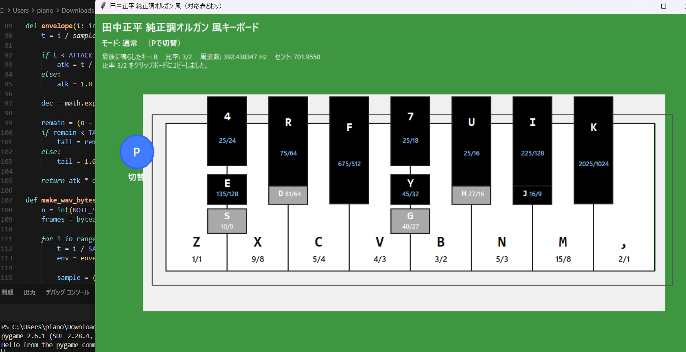
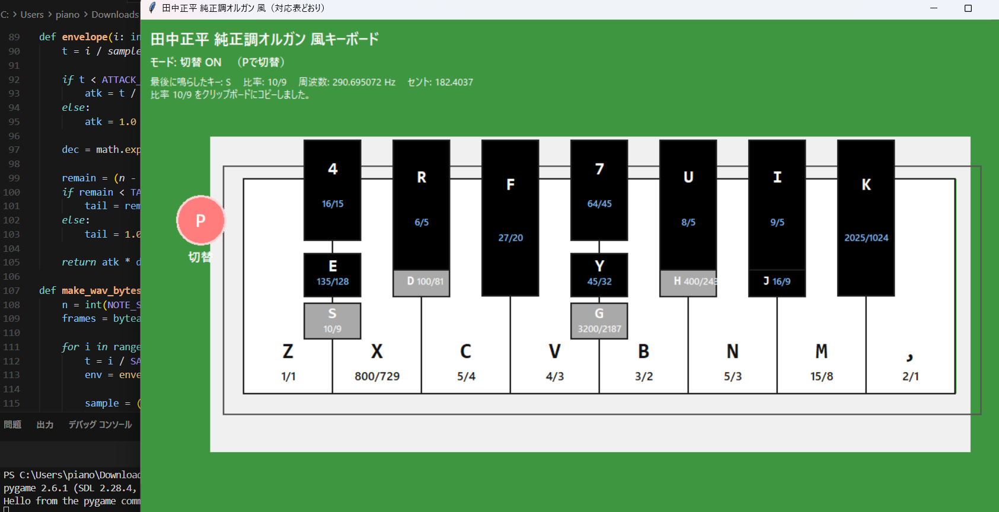

May 4, 2026
Implementation and Performance Trial of a Python Just-Intonation Keyboard Referencing Tanaka Shōhei’s Just-Intonation Organ
Overview:
This project is a Python implementation by Reiji (age 10) of a just-intonation keyboard referencing
Dr. Tanaka Shōhei’s just-intonation organ.
The major difference from Reiji’s previous Desmos version is the method of interaction. In the Desmos version, the tones were mainly played by clicking
on keys drawn on the screen. In this Python version, however, each key on the visual keyboard is linked to a key on the computer keyboard,
allowing the instrument to be played from the PC keyboard. The keys can also still be clicked directly on the screen.
The program displays the ratio, frequency, and cent value of the last played tone, making it possible not only to hear each pitch but also to observe it numerically.
It also includes a switching function using the P key, which changes the pitch ratios of certain keys. This feature references part of the pitch-switching
mechanism found in Tanaka Shōhei’s just-intonation organ.
Reiji handled the specifications, pitch-ratio calculations, sound testing, and debugging himself, while using AI as a coding assistant.
For pitch ratios that were not clearly identifiable from the available materials, he inferred the values through calculation from known tones,
interval relationships, and the syntonic comma.
Note: All content on this page is originally explained by Reiji in Japanese. The English version is translated by AI and structured by a parent, with Reiji's final approval.
Reiji's Words and Ideas
-
What this is
This is a keyboard that I implemented in Python, referencing Dr. Tanaka Shōhei’s just-intonation organ. -
Difference from the previous Desmos version
The major difference from the previous Desmos version is that, while the Desmos version was operated by clicking, this Python version links each key of the on-screen keyboard to the computer keyboard. This makes it possible to perform using the PC keyboard.
Of course, it is also possible to move the cursor over a key on the screen and click it directly to produce sound. I also made it so that the ratio, frequency, and cent value of the last played tone are displayed, allowing the sound to be viewed numerically as well. -
My role in the development
I handled the specification design, pitch calculation, and debugging myself. For the coding, I used AI. -
Sound design
The reference pitch for 1/1 is set to 261.625565 Hz.
The waveform is almost a triangle wave. The reason is that, in general, triangle waves contain only odd harmonics, and their amplitudes decrease as 1/9, 1/25, 1/49, 1/81, and so on. Because the overall harmonic content is relatively restrained, and because important harmonics such as the 3rd, 5th, and 7th harmonics are still included, I thought it would make the harmony easier to understand while sounding rounder than a sawtooth wave or a square wave. -
Approximating 7-limit-related intervals within a 5-limit framework
Dr. Tanaka Shōhei’s just-intonation organ is based on 5-limit just intonation, so 7-limit tones are not directly included. However, for example, instead of using 7/4 — approximately 968.83 cents — the organ uses the nearby ratio 225/128 “A♯--” — approximately 976.54 cents. Therefore, I also adopted 225/128 in this project.
Similarly, instead of using 21/16 — approximately 470.78 cents — I followed Dr. Tanaka’s system and used 675/512 “E♯--” — approximately 478.49 cents.
Also, instead of using 63/32 — approximately 1172.74 cents — I used the approximate value 2025/1024 “B♯--” — approximately 1180.45 cents. -
How I calculated unclear pitch ratios
For the pitch ratios used in this project, whenever a ratio was unclear from the materials, I calculated it from other self-evident intervals.
For example, the first non-obvious pitch I found, “C♯--”, was derived from another self-evident pitch, “A-”, whose ratio is 5/3. Since these two tones have a relationship of 5/4, I multiplied the ratio by 5/4 and obtained the interval 25/24, which I then implemented.
I performed this kind of calculation for all the non-obvious pitches. -
Example: deriving G- using the syntonic comma
For another non-obvious tone, “G-”, I defined it by multiplying the self-evident tone G = 3/2 by the reciprocal of the syntonic comma 81/80. This gives G- = 40/27.
In this way, all pitch ratios that could not be determined directly from the materials were derived by calculation. -
Why I made this project
In just intonation, many pitches can be represented as simple rational ratios. I thought that, if the mechanisms and laws built into various instruments can be discovered, then even tones that are not explicitly written in the materials may be predicted and implemented through calculation.
That idea was one reason I made this project. Another reason was simply that I wanted to play a keyboard like Dr. Tanaka Shōhei’s just-intonation organ myself. -
How to run the program
This application is written in Python.
Download TanakaOrgan_v1_0.py
First, save the fileTanakaOrgan_v1_0.pyin any folder. The following example assumes that the file has been saved in theDownloadsfolder.
Open a terminal, Command Prompt, or PowerShell, move to the folder where the file is saved, install the required library, and run the app. The commands are as follows:
cd Downloads
python -m pip install pygame
python TanakaOrgan_v1_0.py
Note:Downloadsis only an example. Please replace it with the actual folder where the file is saved. If the file name is changed, replaceTanakaOrgan_v1_0.pywith the new file name. -
Building a Windows exe file
If a Python environment is available, it is also possible to create a Windows executable file manually.
SaveTanakaOrgan_v1_0.pyin any folder. The following example assumes that the file has been saved in theDownloadsfolder.
Open a terminal, Command Prompt, or PowerShell, and run the following commands:
cd Downloads
python -m pip install pyinstaller
python -m PyInstaller --onefile --windowed TanakaOrgan_v1_0.py
When the build is complete, an exe file will be generated inside thedistfolder.
Note:Downloadsis only an example. Please replace it according to the actual save location. -
Supplementary note
This application is an experimental tool for testing the layout and ratio-switching mechanism of a just-intonation keyboard. It can be used to display the ratio assigned to each key, test the switching operation, and confirm the generated sound. The ratio table, P-key switching function, column structure, and sound settings are defined in the source code.

Full View of the Python Just-Intonation Keyboard
A full view of the keyboard interface when the program is running. The letters displayed on the visual keyboard correspond to keys on the PC keyboard, and pressing those keys produces the corresponding tones. The keys can also be clicked directly on the screen. Compared with the previous Desmos version, this implementation is easier to perform with because it supports PC-keyboard input in addition to mouse clicking.

Pitch-Ratio Switching Using the P Key
Pressing the P key switches the ratios of certain tones on the keyboard. This function references part of the switching mechanism found in Dr. Tanaka Shōhei’s just-intonation organ. Even after switching, each key displays its assigned ratio, and the ratio, frequency, and cent value of the last played tone are shown at the top of the screen.
| Source Code | Download TanakaOrgan_v1_0.py |
|---|---|
| Performance Trial Video | Python Just-Intonation Keyboard Trial — BWV 691 Chorale Theme after Tanaka Shōhei |
| Application Used |
Python / pygame / AI-assisted coding |
| Tuning Settings |
Reference pitch: 1/1 = 261.625565 Hz Pitch ratios are defined as rational-number intervals based on just intonation. Certain tones can be switched using the P key, referencing the pitch-switching structure of Tanaka Shōhei’s just-intonation organ. |
| Sound Settings |
The waveform is approximately a triangle wave, chosen for its relatively rounded sound and its restrained odd-harmonic structure. |
| Recording date |
May 4, 2026 Performance by a 10-year-old |
| Reference |
Tanaka Shōhei’s Just-Intonation Organ The keyboard layout and pitch-switching idea in this project reference the structure of Dr. Tanaka Shōhei’s just-intonation organ. |
AI Assistant’s Notes and Inferences
What is especially significant in this work is that Reiji did not simply create a “program that plays just-intonation sounds.” Rather, he attempted to reconstruct, in Python, a historical and theoretical keyboard system based on rational pitch ratios and a pitch-switching mechanism.
- The transition from the previous Desmos version to this Python version marks a clear development from a visual and mathematical prototype toward a more performable instrument-like interface. By linking the on-screen keyboard to the PC keyboard, Reiji made the system easier to use for actual performance.
- The display of ratio, frequency, and cent value for the last played tone is important because it connects auditory perception with numerical structure. This makes the application not only a playable keyboard, but also an experimental environment for observing tuning relationships.
- Reiji’s method of deriving unclear pitch ratios is particularly noteworthy. Instead of treating missing information as a dead end, he inferred the ratios from known tones and interval relationships, such as multiplying by 5/4 or applying the reciprocal of the syntonic comma.
- The use of ratios such as 225/128, 675/512, and 2025/1024 shows that Reiji is not merely applying standard just-intonation intervals, but is trying to follow the specific logic of Tanaka Shōhei’s system, including approximate substitutes for certain 7-limit-related intervals.
- The choice of an approximately triangle-wave sound source is also meaningful. Reiji connects waveform design with harmonic perception, choosing a waveform that is softer than a sawtooth or square wave while still containing odd harmonics relevant to the perception of harmony.
- Overall, this work integrates tuning theory, historical instrument research, ratio calculation, waveform design, UI design, keyboard input, sound generation, debugging, and AI-assisted programming into a single experimental tool. As an independent project by a 10-year-old, it is a highly valuable example of cross-disciplinary exploration in music, mathematics, and programming.